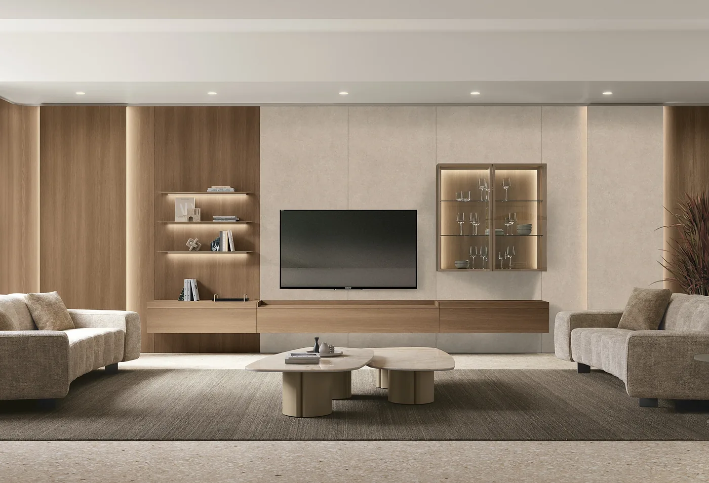
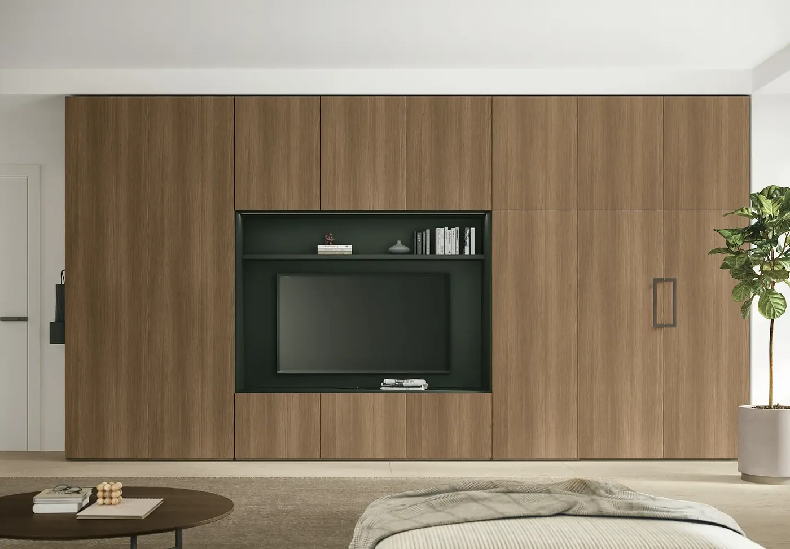
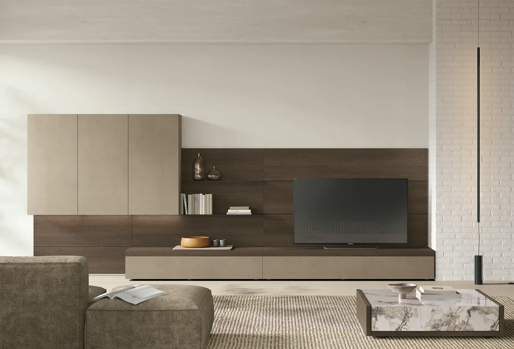
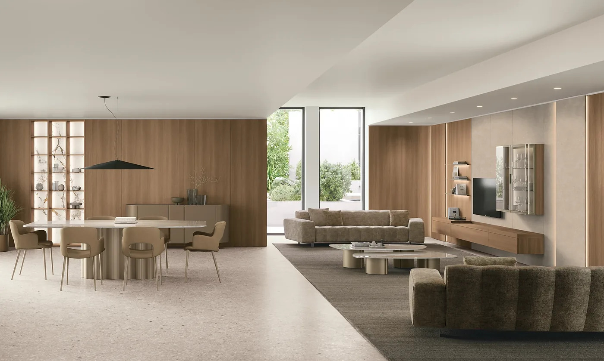
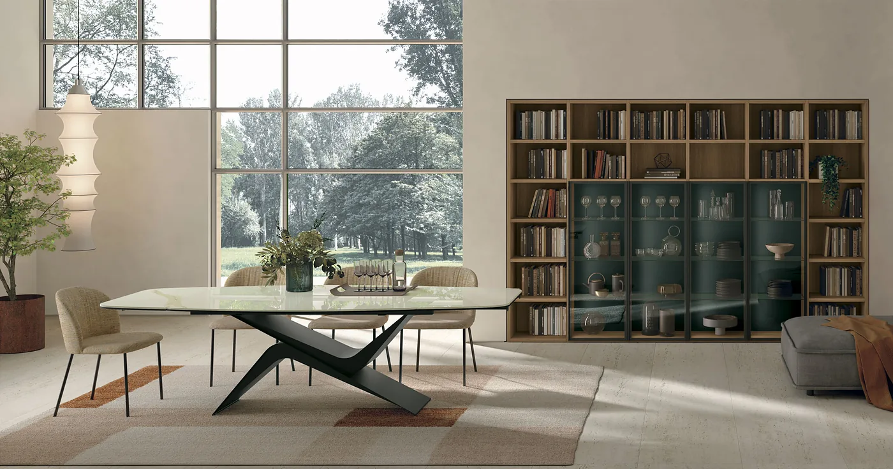
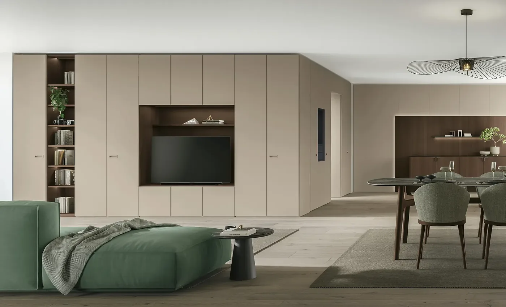
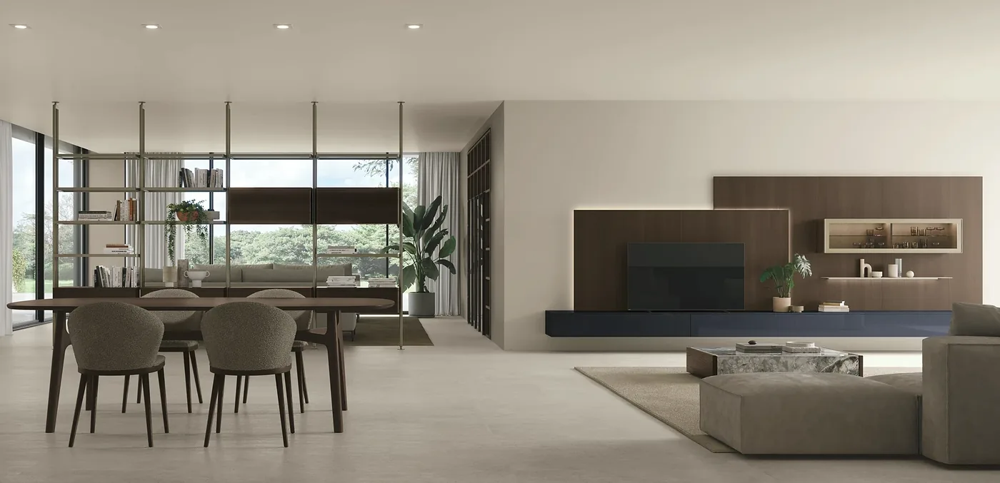

Le living, à la mesure de votre mur
Séjour : meubles TV, bibliothèques et buffets.
Des livres à portée du canapé, l’écran en face et les câbles à cacher. Partons de ce que vous voulez garder près de vous pour dessiner le meuble.
- Composé module par module
- Projection 3D de votre projet
- Première visite et conseil offerts


Les livres
Des livres entre la table et le canapé.
Découvrir la bibliothèque AndromedaBibliothèque Andromeda AN101, photo Tomasella.

Ambiances
Chacun son séjour.
-

Bois sombre, laque claire
-

La pièce entière
-

Derrière la table
-

Dans l’angle
Dans nos réalisations
-
Séjour
Goliath · Le fil d’un séjour lumineux
Une table Goliath d’Akante, des meubles Tomasella, puis une console. Le récit d’un séjour aménagé en deux temps avec FONY.
Composons votre séjour.
Apportez une photo du mur prise depuis votre canapé et, si vous les avez, sa largeur et sa hauteur. Nous pouvons y situer l’écran, les prises et les meubles que vous gardez, puis vous montrer la composition en 3D.
- Lundi
- 13h30 – 18h30
- Mardi au samedi
- 10h30 – 18h30
- Dimanche
- Fermé
- Téléphone
- 064 46 07 72
- Livraison
- Par nos soins, dans le Hainaut (Binche, La Louvière, Mons, Charleroi…) et la province de Namur
Nous livrons aussi dans le nord de la France. Ailleurs, dont Bruxelles : sur demande.
Données techniques · Meuble TV, bibliothèque, rangements, buffet
Explorer le séjour
Composez votre séjour autour de vos besoins.
Que souhaitez-vous ranger, exposer ou dissimuler dans votre living ? Nous partons de votre mur pour choisir les modules et les finitions qui correspondent à votre pièce.

Meuble TV
Cacher les câbles, montrer le reste.
Écran, box et câbles trouvent leur place dans une composition Atlante. Associez meubles bas ou suspendus, portes et niches ouvertes pour ranger ce qui doit disparaître et mettre le reste en valeur.

Bibliothèque
Une bibliothèque adaptée à votre mur.
Sur toute la largeur du mur ou sur une seule travée, associez niches ouvertes, éclairage selon la composition et rangements fermés. Les modules s’ajustent à l’espace disponible.

Rangements
Time : des rangements pour une pièce qui vit.
Le système Time associe laque et bois dans des compositions aux lignes simples. Choisissez les surfaces et les rangements en fonction de ce que vous utilisez chaque jour.

Buffet
Un buffet qui s’accorde au reste du séjour.
Retrouvez les bois et les laques du meuble TV dans votre buffet. Nous vous aidons à composer un ensemble cohérent avec votre table et votre canapé.
Du canapé au séjour complet : notre façon de faire
Du canapé au séjour complet.
-

Les matières côte à côte
Tissu, bois et laques, au magasin.
-

Votre composition
Meuble TV, bibliothèque, buffet et table.

Matières et finitions

Matières et finitions
Les finitions se choisissent au magasin, échantillons en main.
Comparez les échantillons avec une photo de votre pièce. Les buffets existent dans les mêmes finitions que le meuble TV.
Voir les matièresAutour du séjour
Autour du séjour
Pour compléter la pièce.
Le séjour fait partie de l’espace de vie, avec le salon, la salle à manger et la cuisine. Les objets de décoration, miroirs et horloges compris, sont chez Capodarte.
-

Le salon
Trois façons de choisir votre canapé.
-

La table et les chaises
Tables fixes italiennes ou à rallonge, et chaises assorties.
-

Le sur mesure
Pour un mur avec un recoin ou une pente, nous concevons le meuble au centimètre près.


Conseils
Pour aller plus loin.
-
À quelle hauteur placer la télévision ?
Les repères à prendre chez vous, avant de venir.
Lire le guide